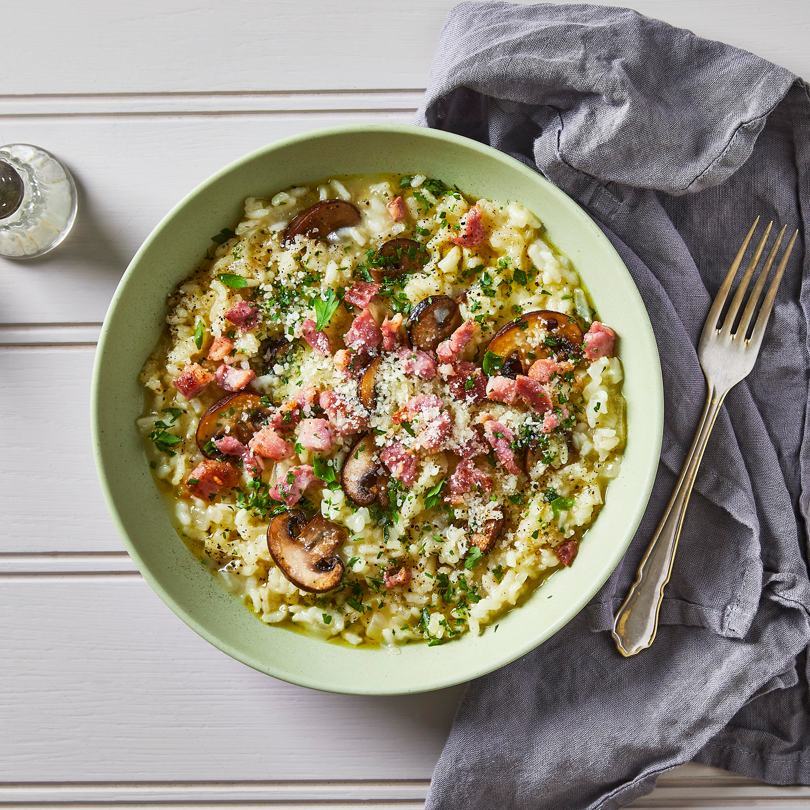

Bacon & mushroom risotto
15 MINUTE RECIPE
Ingredients:
- 1 tbsp olive oil
- 1 onion, chopped
- 8 rashers streaky bacon, chopped
- 250g chestnut mushroom, sliced
- 300g risotto rice
- 1l hot chicken stock
- grated parmesan, to serve
Method:
- Heat the oil in a deep frying pan and cook the onion and bacon for 5 mins to soften. Add the mushrooms and cook for a further 5 mins until they start to release their juices. Stir in the rice and cook until all the juices have been absorbed
- Add the stock, a ladleful at a time, stirring well and waiting for most of the stock to be absorbed before adding the next ladleful – it will take about 20 mins for all the stock to be added. Once the rice is cooked, season and serve with the grated Parmesan.